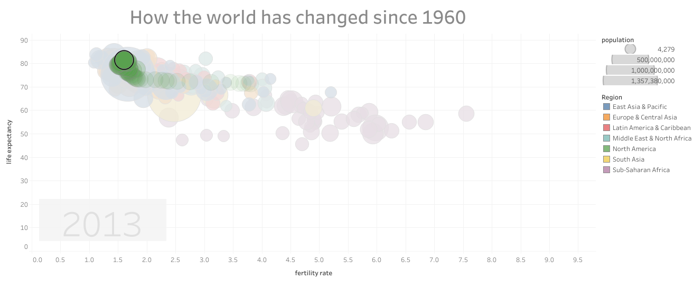

How The World Has Changed since 1960?
Overall

The project used scatter plot visualized chart to demonstrate the health trends of countries in the world from 1960-2013
based on Countries, Region, Fertility rate and Life Expectancy levels.
There was a huge difference among countries at the beginning.
But eventually, as life improves, the difference moves closer. And the most noticeable trend is that countries moved from
the bottom right (i.e. big size family - short life) to the top left corner (i.e. small size family - long life) of the chart.
Canada
It reveals that Canada is facing with an aging problem. Even the gorvernment has tried to fix it with immigration programms in recent years, it seems to take a long way until Fertility rate can reach to 2.0.
East Asia

This region shows an impressive improvement in the life quality over this period.